The first version was quite simple and although it was fairly appreciated, it lacked of active response capacities. BEOTM's capabilities are now much more extensive, it now offers active hooks that send data that is analyzed by the EDR, it can analyze a process's heap, its in-memory regions when an unresolved address is detected in the call stack to detect code injections, abnormal system calls, and much more. All this, coupled with the integration of YARA rules, increases the tool's capabilities and maneuverability.
This article takes a quick look at what's new in the new version and at the small changes that have been made to the existing stuff.
Active Response & YARA Rules ❤️
Injected DLLs and the EDR now communicate via named pipes. Each purpose has its own named piple channel.DLLs send relevant data (buffer addresses, instruction pointers, stack pointers...) to BEOTM which then analyzes the received data and decides whether the process is malicious or not by applying the desired checks.
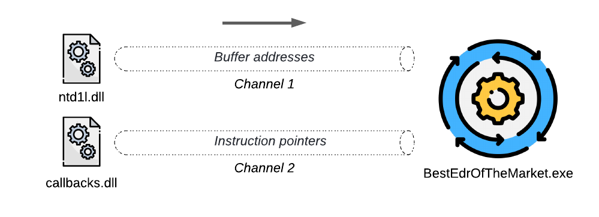
BEOTM does now supports YARA rules! Put your YARA files in the YARA/ directory within THE EDR folder and specify the /yara flag when launching it, they will be compiled and used for pattern scanning at multiple levels (hooks, stack, heap & memory).
I've played a lot with a Metasploit's artifact detection rule which comes from the wonderful Elastic Security repository as it provides a great accuracy for Metasploit-generated artfacts. I was able to test and detect encrypted shellcode injections in the same process or in a remote one. BEOTM's Github repository shows examples of BEOTM commands and parameters to detect various malicious artefacts + their code samples, so don't hesitate to have a look at it. Metasploit artefacts are such a good playground to trigger detections,
Active hooks 🪝
The hooks made on the targeted process now send the EDR addresses to be analyzed, the EDR suspends the process for the duration of the analysis and reads the process memory at the location of these addresses, then checks for YARA patterns or simple patterns, once the analysis is complete, if it finds nothing it resumes execution of the process, if it finds a pattern it kills the program and alerts the user.
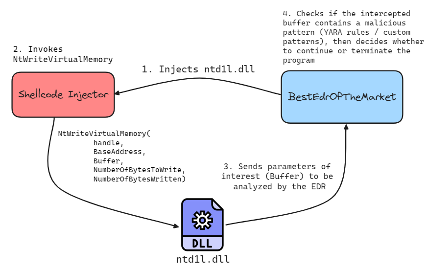
NT-Level Early Bird APC Queue XOR-encrypted Shellcode (Metasploit) Injector VS NT hooks + YARA
The function used here to detect the pattern after shellcode decryption isNtProtectVirtualMemory, Here, the pattern is detected using the YARA rule for Metasploit artifacts.
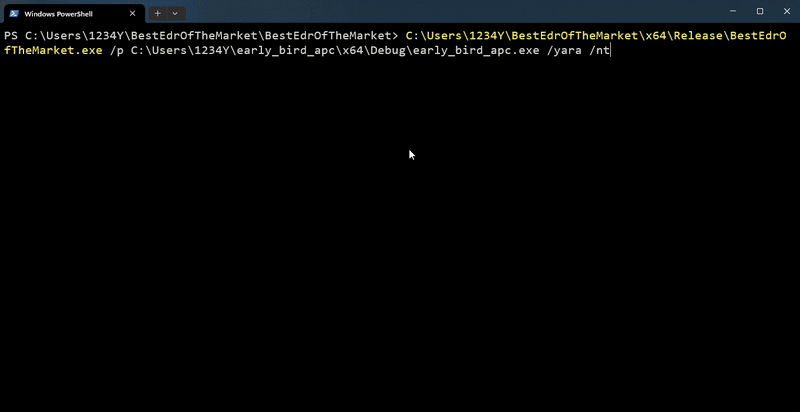
The EDR reports, among other things, the pattern detected and the rule to which it belongs.
[!] Malicious process detected ! Killing it ....
{
"Version" : "1.1.0",
"MaliciousPID" : "13824",
"MaliciousProcessPath" : "C:\Users\1234Y\early_bird_apc\x64\Debug\early_bird_apc.exe",
"DefenseMechanism" : "Defensive technique revealed a YARA pattern matching.",
"DateTime" : "Apr 14 2024 17:43:44",
"YaraRuleName :"Windows_Trojan_Metasploit_a6e956c9",
"YaraRuleNamespace : " : "Elastic Security",
}
0x00000000: 60 89 e5 31 c0 64 8b 50 30 8b 52 0c 8b 52 14 8b `..1.d.P0.R..R..
0x00000010: 72 28 0f b7 4a 26 31 ff ac 3c 61 7c 02 2c 20 r(..J&1.<a|.,
NT-Level Early Bird APC Queue XOR-encrypted Shellcode (Metasploit) Injector VS NT hooks + Simple Patterns
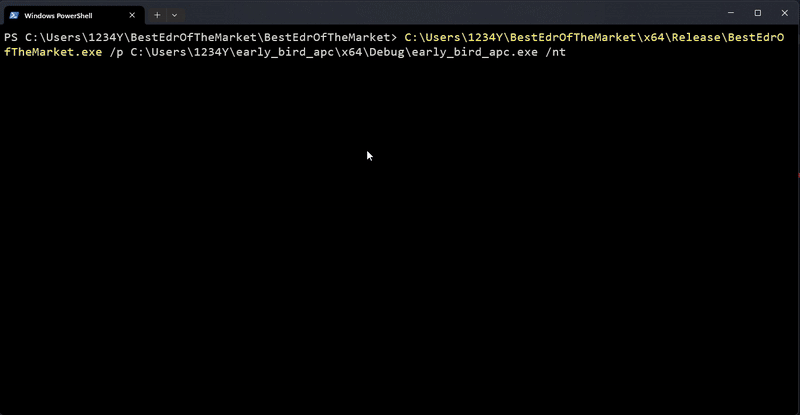
The EDR reports that a pattern has been detected and where it was detected in the case of simple patterns (YaroRules.json).
{
"Version" : "1.1.0",
"MaliciousPID" : "0",
"MalicousProcessPath" : "",
"DefenseMechanism" : "Hooked NtProtectVirtualMemory",
"DateTime" : "Apr 14 2024 17:43:44",
"Address" : "0x00000059E70FF0C8",
"DetectedPattern" : "d265488b5260488b5218488b5220488b725048",
"PatternList" : "DLL Patterns",
"FoundIn" : "cd01000000000000f4000000000000000.....
}
Kernel32-Level APC Queue XOR-encrypted Shellcode (Metasploit) Injector VS Kernel32 hooks + YARA rules
Here, the interception ofWriteProcessMemory reveals the presence of a pattern.
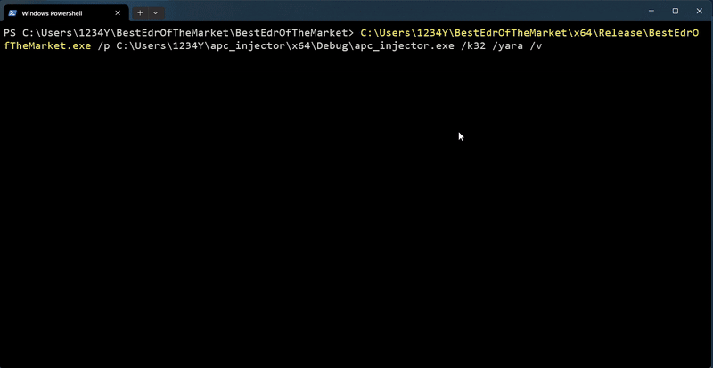
Heap Monitoring 🔍
The/heap flag will activate pattern analysis in the processuss heap and must be used with a hook, i.e. either /k32, /iat or /nt. Each time a function is intercepted, an additional heap analysis will be performed. This mechanism can be used, for example, to detect reflective module loaders by looking for DOS headers patterns within the heap. 
Reflective DLL injection (heap) VS Heap Monioring + IAT hooks
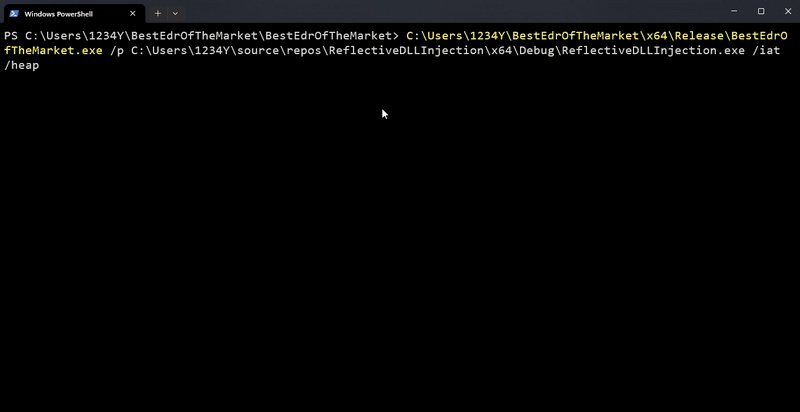
The EDR also reports the heap pattern / YARA pattern that has been identified, a DOS header pattern in the following case.
{
"Version" : "1.1.0",
"MaliciousPID" : "23700",
"MaliciousProcessPath" : "C:\Users\1234Y\source\repos\ReflectiveDLLInjection\x64\Debug\ReflectiveDLLInjection.exe",
"DefenseMechanism" : "Heap Regions Analysis",
"DateTime" : "Apr 14 2024 17:43:44",
"Heap Region Address" : "2228e090000",
"DetectedPattern" : "4d5a90000300000004000000ffff0000b800000000000000400000000000000000000000000000000000",
}
New Threads Call Stack Analysis Methodology🔋
Well, The stack analysis method on the old version was messed up, the tool was actively waiting for threads to refresh and there were a lot of routines that weren't catched, all this has been removed and the process thread call stack analysis is now triggered as soon as a system call is catched. The stack analysis will perform these two checks:- A check on the parameters of stacked functions and verify that, if these parameters are pointers, they should do not point to malicious buffers.
- Analyze the memory region from which an unbacked address emanates, i.e. one that does not belong to the memory region of any module loaded by the process.
/stack flag allows to continuously analyze a process's threads call stack.
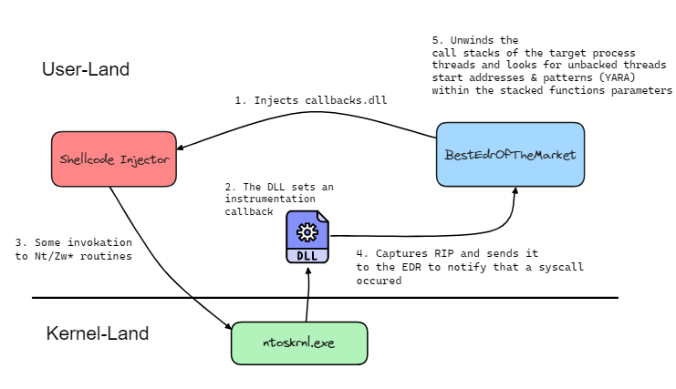
ℹ️ Note that there's no more TrigerringFunctions.json file since there is no longer any active filtering on functions.
NT-Level Shellcode Loader VS Stack Trace Analysis + YARA
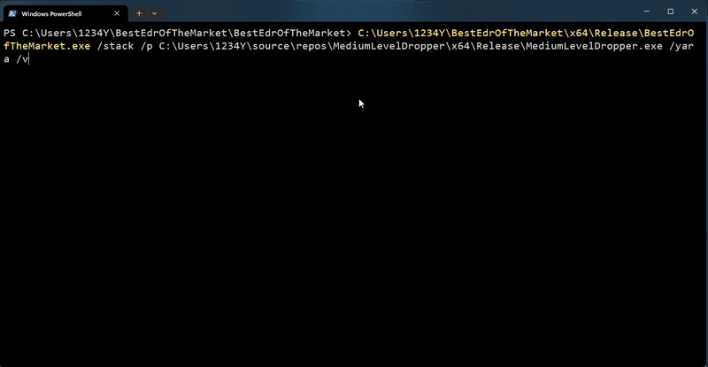
Kernel32-Level Shellcode Loader VS Stack Trace Analysis + Simple Patterns

In the following case, it turns out that the stacked function
RtlImageRvaToSection includes a pointer to a Buffer containing the malicious pattern.
{
"Version" : "1.1.0",
"MaliciousPID" : "17844",
"MaliciousProcessPath" : "C:\Users\1234Y\source\repos\MediumLevelDropper\x64\Release\MediumLevelDropper.exe",
"DefenseMechanism" : "Stacked Functions Arguments Analysis (Normal patterns)",
"DateTime" : "Apr 14 2024 17:43:44",
"Function :"RtlImageRvaToSection",
"Stack Frame Offset : " : "7ff90a9188b6",
"PatternList" : "d265488b5260488b5218488b5220488b725048",
"FoundIn" : "0000000000000000000000000000000000000000000000000000000000000000e02868dc1c02000000000000000000000000000000000000000000000000000000000000000000000000000000
}
ETW & AMSI Patching Mitigation 💀
The EDR also allows you to continually check that the routines essential to AMSI and ETW are not patched, by checking that the opcodes of theAmsiScanBuffer, AmsiOpenSession, NtTraceEvent & EtwEventWritte functions are not altered. Here, the EDR detects a process that modifies the byte sequence of the above-mentioned routines.
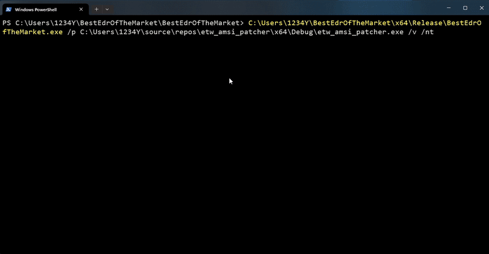
Direct Syscalls Who ?
the EDR can detect when a direct syscall occurs, by intercepting the kernel return to the process and setting up an instrumentation callback to retrieve the value of the RIP register. The RIP register is then sent to the EDR, which checks whether it is legitimate and corresponds to an NTDLL routine. If this is not the case, the EDR assumes that a manual/direct system call occured and terminates the process.This is the same mechanism used to notify the EDR that a system call occured and launch a call stack analysis.
The
/direct flag enables interception of direct syscalls.
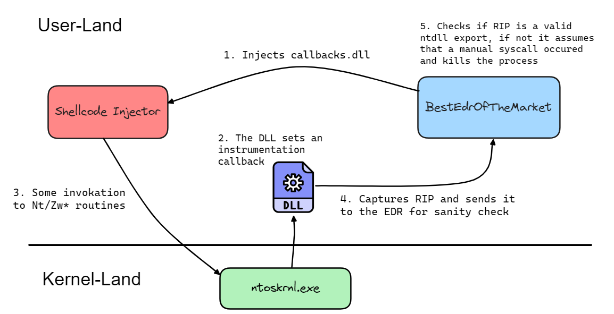
DefensiveInjector (by @bats3c) VS Direct Syscalls Detection (RIP check)
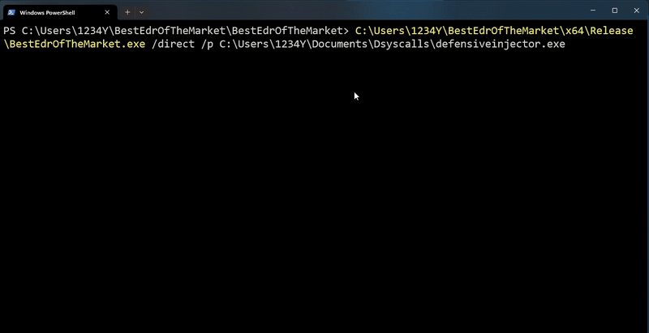
The EDR reports the syscall stub address within the target process.
[!] Direct Syscall stub at 0000000000401E5A
{
"Version" : "1.1.0",
"MaliciousPID" : "29932",
"MaliciousProcessPath" : "C:\Users\1234Y\Documents\Dsyscalls\defensiveinjector.exe",
"DefenseMechanism" : "Direct Syscall detection through callbacks interceptions.",
"DateTime" : "Apr 14 2024 17:43:44",
"StubAddress" : "0000000000401E5A",
}
Catching Potential Indirect Syscalls
This method consists in protecting a set of routines against indirect syscalls by setting a hardware breakpoint inside them. Once the hardware breakpoint has been reached, an exception handler retrieves the context of the calling thread and checks whether the stack pointer (RSP) actually points to a Kernel32, Kernelbase or Ntdll routine. If this is not the case, the EDR assumes that the invocation is not legitimate and kills the process.Since there are only 4 hardware breakpoints for inline addresses, the routines I've chosen to protect against indirect syscalls are : NtProtectVirtualMemory, NtWriteVirtualMemory, NtCreateThreadEx and NtCreateUserProcess
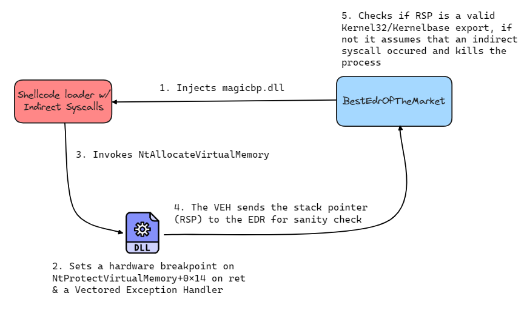
I've already had a chance to talk about this method in my previous article (which was banned by Linkedin lol), it goes into more details about how this method works.
Hell's Hall (By @MaldevAcademy) VS Stack-Pointers Sanity Check
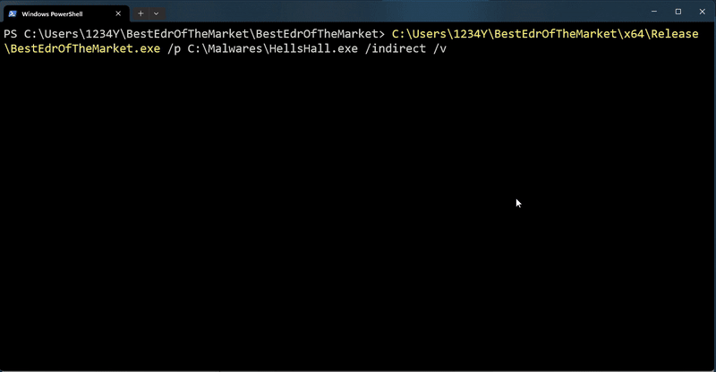
The EDR reports the address pointed to by the offending RSP.
[!] Indirect Syscall Detected !
{
"Version" : "1.1.0",
"MaliciousPID" : "22056",
"MaliciousProcessPath" : "C:\Malwares\HellsHall.exe",
"DefenseMechanism" : "Indirect Syscalls detection through stack pointers health Check.",
"DateTime" : "Apr 14 2024 17:43:44",
"StubAddress" : "00007FF6748A229C",
}
Docs 📚
I'm also working on a Doxygen documentation for those interested in the source code, which is accessible at the following link: https://xacone.github.io/BestEdrOfTheMarket/. Take a look at it if you're one of them 👀.Epilogue
There's still quite a few things to improve, but working on this project is a source of fun for me and I don't intend to stop there, so if you have any ideas, proposals (or even criticisms), it'll be a pleasure to discuss them ;)Also feel free to open a issue for each bug/crash or excessive false positive you may encounter, I'll be happy to take a close look at it.